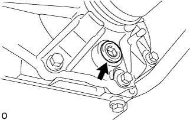
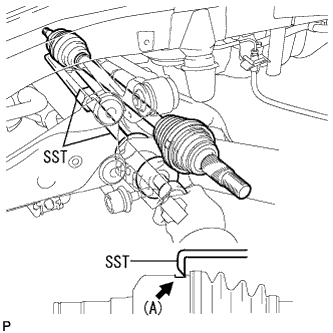
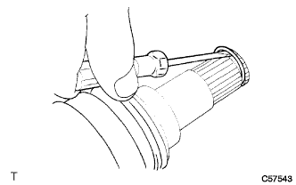
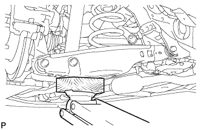
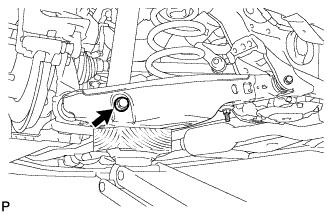
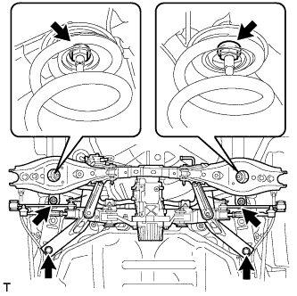
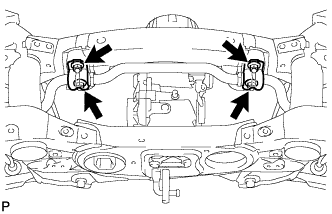

Stabilizer Bar Rear (4WD) Removal |
| 1. Disconnect Battery Negative Terminal |
| 2. Remove Rear Tire |
| 3. Drain Differential Oil |
 |
Using a socket hexagon wrench 10, remove the filler plug and gasket from the rear differential carrier.
 |
Using a socket hexagon wrench 10, remove the drain plug and gasket from the rear differential carrier, and drain the oil.
Using a socket hexagon wrench 10, tighten the rear differential drain plug with a new gasket.
| 4. Remove Exhaust Tail Pipe Assembly |
 |
Remove the 2 bolts and 2 compression springs.
Disconnect the 2 exhaust pipe supports and remove the exhaust tail pipe assembly.
Remove the gasket.
| 5. Remove Exhaust Pipe Assembly Center |
 |
Remove the 2 bolts.
Disconnect the 3 exhaust pipe supports and remove the exhaust center pipe assembly.
Remove the gasket.
| 6. Remove Front Floor Heat Insulator NO.2 |
 |
Remove the 4 nuts and remove the front floor heat insulator No.2.
| 7. Remove Propeller Shaft with Center Bearing Assembly |
 |
Remove the 2 bolts and center bearing washers, and disconnect the propeller with center bearing shaft assembly.
 |
Put matchmarks on the differential carrier assembly and propeller shaft assembly.
Remove the 4 nuts and 4 washers, and disconnect the propeller shaft assembly from the differential carrier assembly.
 |
Put matchmarks on the transfer assembly and propeller shaft assembly.
Remove the 4 nuts and 4 washers, and disconnect the propeller shaft assembly from the transfer assembly.
| 8. Remove Rear Axle Shaft Nut LH |
 |
Set the SST aligned with the groove of the rear drive shaft assembly LH, and using a hammer, unstake the rear axle shaft nut.
Using a socket wrench (30mm), remove the rear axle shaft nut.
| 9. Remove Rear Axle Shaft Nut RH |
| 10. Disconnect Speed Sensor Rear LH |
 |
Disconnect the clamp.
 |
Remove the bolt and disconnect the speed sensor rear LH.
| 11. Disconnect Speed Sensor Rear RH |
| 12. Remove Parking Brake Lever Protector |
 |
Remove the parking brake lever protector from the parking brake cable assembly No.3.
| 13. Disconnect Parking Brake Cable Assembly NO.3 |
 |
Remove the 2 bolts and disconnect the parking brake cable assembly NO.3 from the trailing arm assembly rear.
| 14. Disconnect Parking Brake Cable Assembly NO.2 |
| 15. Disconnect Rear Disc Brake Caliper Assembly LH |
 |
Remove the 2 bolts and disconnect the rear disc brake caliper assembly LH.
| 16. Disconnect Rear Disc Brake Caliper Assembly RH |
| 17. Remove Rear Disc LH |
 |
Put matchmarks on the disc and axle hub, and remove the disc.
| 18. Remove Rear Disc RH |
| 19. Remove Rear Axle Hub & Bearing Assembly LH |
 |
Remove the 4 bolts and disconnect the rear axle hub & bearing assembly LH from the rear axle carrier.
While lightly tapping the end of the rear drive shaft with a plastic hammer, remove the rear axle hub & bearing assembly LH from the rear axle carrier.
| 20. Remove Rear Axle Hub & Bearing Assembly RH |
| 21. Remove Height Control Sensor Sub-assembly Rear RH (w/ Discharge Headlight) |
 |
Disconnect the connector and disengage the clamp.
 |
Remove the 2 bolts and remove the height control sensor assembly (rear).
| 22. Disconnect Rear Suspension Arm Assembly NO.1 LH |
 |
Remove the bolt and nut, and disconnect the rear suspension arm assembly NO.1 LH from the rear suspension member assembly.
| 23. Disconnect Rear Suspension Arm Assembly NO.1 RH |
| 24. Loosen Trailing Arm Assembly Rear LH |
 |
Loosen the 2 bolts of the trailing arm assembly rear.
| 25. Loosen Trailing Arm Assembly Rear RH |
| 26. Loosen Rear Suspension Arm Assembly NO.2 LH |
 |
Loosen the bolt and nut of the rear suspension arm assembly No.2 LH.
| 27. Loosen Rear Suspension Arm Assembly NO.2 RH |
| 28. Remove Rear Axle Carrier LH |
 |
Remove the bolt and nut, and disconnect the upper control arm assembly rear LH from the rear axle carrier.
Remove the bolts and nuts, and remove the rear axle carrier from the trailing arm assembly rear and rear suspension arm assembly No.2 LH.
| 29. Remove Rear Axle Carrier RH |
| 30. Remove Rear Drive Shaft Assembly LH |
 |
Using SST, remove the front drive shaft assembly LH.
| 31. Remove Rear Drive Shaft Assembly RH |
| 32. Remove Rear Drive Shaft Inboard Joint Snap Ring LH |
 |
Using a screwdriver, remove the snap ring.
| 33. Remove Rear Drive Shaft Inboard Joint Snap Ring RH |
| 34. Remove Rear Stabilizer Link Assembly LH |
 |
Remove the nut and remove the rear stabilizer cushion.
 |
Remove the nut and remove the rear stabilizer link assembly LH.
| 35. Remove Rear Stabilizer Link Assembly RH |
| 36. Disconnect Shock Absorber Assembly Rear LH |
 |
Support the rear suspension arm assembly No.2 LH with a jack, with a block of wood in between.
 |
Remove the bolt and nut, and disconnect the rear shock absorber assembly LH.
| 37. Disconnect Shock Absorber Assembly Rear RH |
| 38. Remove Rear Suspension Member Sub-assembly |
 |
Disconnect the connector, 4 clamps and hose.
Support the rear suspension member w/ differential carrier assembly with an engine lifter.
 |
Remove the 2 bolts and 4 nuts, and remove the rear suspension member w/ differential carrier assembly and 2 rear suspension member stoppers lower.
| 39. Remove Stabilizer Bar Rear |
 |
Remove the 4 nuts and the 2 rear stabilizer bar brackets No.1.
Remove the rear stabilizer bar.
| 40. Remove Stabilizer Bushing Rear |
Remove the 2 rear stabilizer bushings from the rear stabilizer bar.